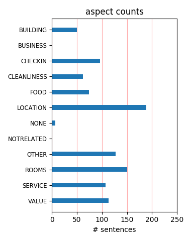
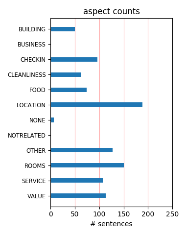

Very handy to shopping, subway, Royal Ont. Museum Clean helpful staff. Self parking $25 ?day. Charge for wi-fi can be acoided by signing up fpr Marriott club. Points can be transferred to airline program. Large clean room. Large clean bathroom.
The hotel is clean, modern and up-to-date. the room we had seemed to have been recently updated, or the hotel is practically new. There is a subway stop directly below the hotel for both the main lines in Toronto making getting around town a breeze.
I recently stayed at this downtown Toronto hotel and loved my experience! The staff were friendly and helpful and the guest room was very comfortable. I have to say I am a big Marriott fan, the beds are so comfortable that I am considering buying one for my home.
The hotel is in a great location, close to many wonderful restaurants, very charming neighborhood. The room was very spacious, the bed was comfortable and the service was excellent. I was able to find parking right across the street (not inexpensive but very close).
4 gals stayed here in a room with two queen beds, was very comfortable, plenty of room for a short stay. Clean, good beds, quiet, indoor parking. In-room Coffee was awful. Excellent location for visiting downtown Toronto, subway a few steps away, close to interesting Yorkville and Bloor Street.
Just recently stayed at the Marriott Bloor Yorkville Hotel (Wedding June 18th) for an overnight. This hotel is clean and service is great. The rooms are nice. IThe beds are very, very comfortable. The location is excellent for shopping and dining. I would stay again and would recommend, No problem
Hi, I would like to thank Mr. Mark Manager of the hotel, who took care of the delegates came from India for the conference here in Toronto. Very well organized and the staffs are very kind of course the hotel is well maintained. Thank you very much sudarshan Faculty Bio-medical Engg Centennial College. Toronto
Front desk staff and management attitude not even good enough for a one star hotel. Rude and unwelcomming, and did not honour my reservation even though I gave them my credit card number when I did reservation online to guarantee my reservation. They did not even attempt to fix the problem or offer alternatives.
Stayed in a large room wtih two double beds. Hotels staff was friendly and rooms were very clean. The location is ideal for shopping and Restaurants on Cumberland Street are very good, pricey but well worth it. The only inconveniene is the parking. Situated in another complex and to access it you need to exit the property.
Nicely appointed rooms, parking is difficult as you must driveto back of the hotel, and there are many one way streets. No pool. Gym with good equipment. No newspaper. Only one restaurant. Good concierge and front desk service. Valet parking is expensive. No small touches like chocolates on your pillow. Windows on the outside were dirty.
The hotel doesn't have much to offer in terms of design features or "experience". One thing they can do is to get fast internet so people can get their work done. When that doesn't work, there is little point of staying there. If you don't need fast internet, the place is OK... rooms are large, TV is there, gym is bigger than one would expect...
My cousin and I were in Toronto for a Phillies game and to experience the city for a weekend. This hotel has large rooms and appears relatively new. When traveling, I like to stay in Marriott hotels if I can. I would say this is a good Marriott hotel, but it is not the best Marriott hotel I have stayed in. The location was ok in relation to the price that we paid.
I stayed for a couple of days at this hotel on business. The room was comfortable and clean, though nothing special. I think the location was very central, though the office I was traveling to was rather far out. The hotel restaurant was very friendly, though the menu and decor are a bit uninspired or dated. The service was great, and I felt very welcomed by the staff.
Hotel was in great area. Metro in basement, nice market next door and across the street from a good all-day breakfast place. Seemed extremely safe to walk around. Very close to high end shopping and good restaurants. Ate one "appetizer" meal in restaurant. Good, not great. "Jenny' the concierge was extremely helpful -- even walking us out the door to give us directions.
Our stay was brief thankfully, the tv didn't work, there was construction, so not the quietest - we allegedly stayed at an upgraded room - it was code for horrible decor really. my boyfriend forgot his watch there and their explanation was well we looked and it wasn't there. not recommended - 4 stars is an over rating for that hotel- the one good thing was the beds were comfy
Literally above the metro and right on Bloor (the Bond street of Toronto) the location is very good. The bed is very comfy and massive, room is nice but nothing special. Restaurant had great service but only average food. Get the internet and breakfast included for about 4 bucks, well worth it. A good place if you're not going to be spending much time there, or to hold a convention at.
POSITIVE: Great spacious clean rooms. The bed was really comfortable. Huge LCD tv – with a connection board for laptops and other devices. Great location – at the top of the Yorkville downtown area. Friendly staff. NEGATIVE Internet is not free – over CAD 13 per day. No breakfast included – over CAD 13. Paid parking (if you don’t move the car the whole weekend it’s just 15 CAD).
Really well kept hotel. Clean, spacious, beautiful rooms. The bed felt we were sleeping in a soft cloud... loved it. Nice bathroom. Check out time was at 1 pm - which was great. Right across the street was a great little restaurant called Peridot - nice ambience there. Not a noisy hotel - wasnt disturbed by anyone in the next room or in the hallway. Very pleased with the choice and our stay.
This hotel was a great experience. I also stayed at another property in Toronto on the same trip that was supposed to be better, but it wasn't. I thought the service was very particular and I can appreciate that. This hotel is also in a very trendy part of town away from most of the hussle and bustle. I would suggest you stay at this hotel and I will try to stay here anytime I am in Toronto!
Typical 4 star Marriott. Nice room with an supremely comfortable bed. Helpful staff and nice breakfast at the hotel restaurant. Best feature of this hotel by far is the very easy access by car to the hotel. Once parked, the subway system is within a block. Nothing special about the room rates, however it is a good recommend for people driving into city whom need a good downtown base to work out of.
The Marriot on Bloor is not the best looking hotel, in fact its down right ugly. The purpose at staying at this location was to take our daughter to University. The rooms were small but nice and the location was great. We looked out our window to a courtyard of over grown plants and garbage. The lobby was small and not a place to hang out. In all the room served its purpose and the location was great at a good value.
The Toronto Marriott is bright, clean, and modern. I enjoyed the fluffy hypoallergenic feather pillows, and there were plenty of them (I often ask for extra pillows if there are only two in the room). We got a reasonably-priced room through an online website. In a good location in Toronto, walking distance to lots of restaurants and shops. Cost of parking was reasonable compared to other downtown hotels – park in the lot next door.
Great service, nice restaurant, good location. Excellent all around. Especially good was the man with the mustache at the concierge/trip planning desk who was absolutely the most helpful hotel staff person I have ever met anywhere. He went above and beyond in helping us plan our activities etc. These are the things that stay with you after visiting a new city. The whole atmosphere at the hotel is positive. Room service was prompt and delicious.
I found here is nothing particularly redeeming about this hotel, which several reviewers seem to love. The location isn't great for business downtown and basically they took a shabby old hotel did some renovation work to make it acceptable but I think the end result was quite ordinary. Generally speaking the Marriotts are a cut below the other chains in Toronto (Sheraton, Hyatt, Delta, etc) and I can't think of a good reason other than price to return.
First of all, I'm a loyal Marriott customer because their rewards program is the best. While this wasn't the nicest Marriott property I've ever been to, the staff here was phenomenal. Everyone we encountered from the front desk, housekeeping, waiters, were the friendliest, most hard-working I've seen in quite a while. It's amazing to be at a large chain and yet feel that you're at a small, boutique hotel property. Stay here if you want personal, caring service!
We recently stayed at the Marriott for five nights. Had a great time. The staff was very pleasant and helpful, the rooms clean and comfortable, and the location could not have been better. Only minutes away from shopping, restaurants, and the subway is right below the hotel. There is a great market next door when the kids needed a evening snack. The only drawback is that there is no free internet, but otherwise we would highly recommend this hotel. We would definitely stay here again.
Stayed on business and would not hesitate to recommend this hotel. King bed was extremely comfortable with a selection of both soft and hard pillows. Room was spacious and immaculate, staff was always helpful with directions and service. Room service was very prompt. Also extremely important, the location is very central (Bloor & Yonge), subway is right downstairs, as well as a small mall. This hotel is walking distance to shopping, restaurants, and there is a grocery store right next door.
I stayed at the Toronto Marriott Bloor Yorkville for two nights in mid-February. It was OK, for a four star hotel. I stay in Toronto a number of nights per year on business... and this hotel is at best OK. It's on the PATH (underground walkway/shopping) but that is the highlight. The rooms are clean and well kept... but the hotel is on the smaller side, and you can do better for the same price in Toronto (eg the Sheraton Centre). The staff was friendly, but there is nothing here to bring me back.
RECOMMENDED: This centrally located business class hotel lacks an impressive lobby or public areas, but for it's a solid Marriott experience. Large well maintained and renovated rooms tastefully decorated. Workable desk area and chair. Plenty of illumination throughout.. Quiet rooms and comfortable bedding complete the experience. In room wired & wireless Internet with good access speeds. Service is friendly and efficient. This is not a dazzling property but a quality property for an executive in transit.
I arrived at the Marriott from a long overseas flight and was nicely greeted at the front door and lobby. Best thing of all, they allowed me to choose some freebies and then sent them up to my room - a snack of wine, fruit, and pretzels in my case! My room was typical Marriott, roomy, comfortable and nicely furnished. The flatscreen TV was huge! Globe and Mail in the morning, quiet night, comfy bed, lots of pillows...and a breakfast buffet that was excellent and cheaper than some. I would happily go back again.
This hotel had a four-star rating on Pricelin--the highest rating possible. So, I had high expectations, despite the Marriott brand... However, it was just a typical Marriott. Clean room, yes. Coffee maker, yes. TV, yes. Pleasant-enough staff, yes. That was about it. Some of the features advertised on Priceline as well as on hotel's own website/literature were not avaiable (e.g., no shuttle service to the airport, no gym/spa, etc.). All in all, this is a very good middle-class hotel. It certainly is NOT a four-star hotel by any means.
I travelled to Toronto on Jan 20/12 to spend a weekend with my 3 sisters and cousin for a fun girls weekend. We were very happy with the location of the hotel, close to shopping (underground) with wonderful restaurants nearby. We received an upgraded room that included a sitting area that was perfect for our group. All calls to the concierge and for room service were handled immediately and we always had service with a smile. I would defintely return to this hotel for a future stay in Toronto and have no complaints about the hotel whatsover.
I have been staying at this hotel almost weekly since August of 2011 and have never been disappointed. The hotel staff, especially the front desk and Consigner’s Lounge staff, provides timely and effective service. The staff is always pleasant and more than willing to help. The Hotel itself is clean and reasonably well kept. The subway is available directly underground to the hotel as is a shopping plaza complete with food court. There a several excellent restaurants within walking distance and for those adventurous souls Yonge St is just around the corner.
Stayed one night - ok, but missed not having a pool and hotub. booked on Priceline for $55US Parking - Before I arrived i called the hotel to ask about parking - they told me the only paking available is Valet for $27 a day. They did not tell me there is a parking garage which can be accessed underground right next to the hotel. I was surprized it only cost me $10 for a 24 hour period. It is a little confusing to find your way but there is a door from the underground shopping area to the hotel. We toured around using the subway system - worked out good only $9.00 for a day pass for 2 people
Had to change rooms twice in three days. First there was hair in the bathroom sink that appeared to be of the pubic variety, then the shower was clogged, and the thermostat broken. My new rooms were on the first floor, and the furthest possible rooms away from the elevator! All I got for my horrific experience was free breakfast at the restaurant downstairs, but even that was a nightmare, as on the last day, I found a hair on my sausage link! I will say that the bed was extremely comfortable, but given the bad experience, that was not enough to make up for the other goings-on. Would not stay here again.
A very nice hotel - a typical Marriott property. Although I got a deal via Hotwire, my Marriott Rewards status was honored and I received free breakfast for two, and a half bottle of local wine. The room had all the standard amenities except there was no refrigerator/mini-bar. But it's a clean and comfortable hotel and would be great in the winter as it is literally on top of the Bloor/Yonge subway station. There's a stairway/elevator directly from the lobby to the shopping mall and subway which is just a few feet away. So if you're looking for a convenient location at Toronto's busiest subway station, this hotel is for you.
There is one main reason you choose this hotel: location. It is located at the junction of the Yonge and Bloor subway lines and is also right on the PATH. But despite this central location, it was still a ride to go to any of the attractions or evening hotspots. The rooms were decent, the staff was courteous, but nothing out of the ordinary. While there is nothing specific that would make me rate this hotel negatively, for business or tourists, I would recommend staying closer to Eaton Centre or Union Station. If you're in the suburbs and still want subway access, consider North York. For the price, this hotel is only passable.
Stayed at the Marriott Bloor Yorkville while attending a conference. Check in process was quick and easy. Front desk staff was helpful. The rooms were large and very clean. The bed was great, although the room was noisy. It was as if there was a mechanical/boiler/laundry room on the other side of the wall by the head of the bed. The sound of the fans and thumping could be heard all night. Requested a late check out, but it was not available due as the hotel was booked to capacity. Overall, good experience, would stay again. 20minute walk to Eaton Centre. The self parking at the hotel is difficult to find as it has poor signage.
The hotel was older, run down and the decor is way too busy. The first room they gace me which was on the 6th floor had a windoe facing a courtyard. We checked in at night and I could not see out. I woke up naked and when i turned around all I could see were people outside my window looking in. They were on a break from a convention held at the hotel. I asked to move and they moved me to the next level up. That was all they had. This room was on the corner to a all window hallway of a convention room and I woke up again the next morning with people looking in from the window of the hallway on the corner. This hotel is poorly designed!
This hotel is right on top of the Bloor and Yonge station. It is convenient to travel by subway in just about every direction. It is not as noisy and crowded as other neighbourhoods in downtown Toronto. We have four people staying in a room with two queen beds and it doesn't feel cramped. The hotel was renovated a couple of years ago and feels quite fresh. HD TV is a pleasure to watch. The lobby is quite small and undistinctive. The front desk is not staffed as fully as it should. One Saturday afternoon, the concierge wasn't there. We waited about 10 minutes to get a bandaid. The restaurant looks dark and unappealing. Overall, nice place.
We stayed one night, July 25 and found the hotel to be very comfortable. The checkin person was especially friendly and helpful and made us feel welcome. We had king room and it was very spacious with an excellent bed and lots of pillows. Bathroom was not large but clean and good showerhead. Their breakfast buffet was outstanding and we thought reasonable at $15.95. It also was convenient to have the subway right there. We took it to go out for dinner and return. We would stay here again. We weren't driving so cannot comment on the parking. However, when we departed the doorman was very pleasant in getting us the flat rate taxi we wanted to go to the airport.
Most important note: Unless you are only staying in Toronto, get a hotel OUTSIDE the city. The parking fee is extremely high (some underground garage). It's almost 30 dollars. Spaces are all tight and limited. People were nice. Location was good. Right above the underground mall area. Room was kind of far, was a trek to get there. The rooms were pretty fair though. It's what you would expect. Some burnt out bulbs. A little dusty on the shelves and such. Good place to stay, but if you are renting/bringing a car, rent outside the city and drive in because you are going to get killed with parking fees. I think it's only worth it here if you plan on not having a car.
My family of 3 stayed here on Labor Day weekend in Toronto. It was very nice. Clean, updated, and worth far more than the $50/nt a paid through Priceline. It was very convenient taking the subway to see LOTR, Medieval times, and CN tower, from the hotel. We ate breakfast at Matisse restaurant one morning. It was very good, but expensive. We used the business center to check emails. That was very convenient also. The only complaint we had was the long walk to the room when we got off the elevator. We were in room 138. We would definitely stay here again, but will ask for a room close to the elevator. The only reason I didn't rate this hotel excellent, is the lack of a pool.
I recently stayed at this hotel for a conference and found the staff to be super-courteous, efficient, and helpful, and the location can't be beat: walking distance to most downtown locations and steps from the subway to go further afield. The rooms were very clean and well-appointed. My room was very large - though others in my group told me theirs were much smaller. Small quibbles about the room: despite the fact that there was lots of wall space, the only mirror was the one in the bathroom, and the bathroom had a shower only (fine for me, but something others might not like). The food served in connection with the conference was excellent (I didn't eat in the restaurant).
While staying in this hotel someone broke into our room wile my boyfriend and I were sleeping and stole all of our money and credit cards. I am assuming it had to have been an inside job and that they were a professional pickpocket because we did not hear them. The hotel did nothing to help us except for a complimentary breakfast. The hotel proved to be completely unconcerned that this could happen to one of their customers while staying in one of their hotels. I will never stay in a Marriott hotel again. I strongly advise to look elsewhere for a hotel when staying in Toronto. I can not go back in time and change what happened to me but hopefully I can help make sure that this does not happen to someone else
we actually stayed here on a comp through marriott rewards. Staff was excellent! We stayed in room 631 view of courtyard, well appointed room . 42" TV , nicely decorated room, refrigerator, nice bathroom too. I believe it was recently renovated. Garage was $26.55/day with in & out privaleges... WELL WORTH IT! We stayed over on thursday nite checked in at noon and left at 9am. Staff was very friendly, turn down service at nite was nice. This place is alot nicer than the Courtyard Marriott on Yonge St. (Stayed theire 3 times) The only thing missing was a swimming pool. There is a nice concierge lounge on 6th floor that provides breakfast in morning and snacks all day long! If the price is right I'd go back in a heart beat!
I was travelling with a delegation of 8 from India and we stayed at this hotel for 3 nights. The hotel that you spend through your jet lag usually doesnt get good reviews but this was a good place. Rooms were decent ( though I did find lighting a bit low) bathrooms decent sized and comfortable beds. I had a few vegetarians in my group and we checked in by 8 pm on arrival. Check in process was smooth and everyone had their room keys in less than 5 minutes which was impressive. The restaurant was closed by the time we all freshened up and came down, so we ended up having to order dinner at the bar. The waiter was really kind and managed a group of 10 walking in near to closing time very well including a few with dietary restrictions.
but other than that the location sucked. We booked this off of priceline, so we got a really good deal (even after having to pay for parking), but we expected to be in the middle of downtown and it was a really far walk to the big malls, the good shopping, and the nightlife. However, the hotel is right on top of both of Toronto's subway lines, so it was pretty easy to get around (and the subway is very clean - nothing like NYC). Rooms and hotel staff were so-so - by far the worst Marriott that I've stayed at, but I've always been extremely happy at Marriott. Maybe they just have different standards for Mariotts in Canada. Basically, a good deal for the price we got on priceline (80 USD/night), but I sure wouldn't pay full price for it.
Stayed at the Marriott Bloor Yorkville this past weekend with my boyfriend. The hotel was a nice walk away from Yorkville and all the great shopping and restuarants. The staff and the property itself was very clean and modern, especially our room. Our room was luxurious with a beautiful bathroom and fine furnishings. The bed was so comftorable that when I returned home to my own bed I went out matress shopping the next day!!! We ordered room service breakfast both mornings we were there since there wasnt any other good breakfast places in the area except for Mickey Ds and Tim Hortons. A little pricey ($15 a person) yet they deliver it to your room and the portions were larger then normal. Very delicious. Highly recommend this property!
Very typical hotel, nothing special. Rooms are good size, yet mediocre in design & amenities. Circular floor layout, make for a long walk to some rooms. I stayed for a week for a business trip, we hosted our annual Sales Meeting here. The meeting rooms were nice, the service was excellent - the business concierge, the av team, the food services; would definitely recommend for business activities. The front desk and restaurant/bar were kind but to the point. A big complaint...twice during my 6 night stay we were awoken by the fire alarm and evacuation. Come to find out it was the Bunsen burners being used by the hotel staff to heat breakfast in the 4th floor corridor for another meeting. No explanations, no apologies - NOT good customer service.
I've just stayed at the Marriott on Bloor for business and found it to be a perfectly adequate hotel. The staff were very efficient and friendly, I used the valet on 3 days and found it very prompt and helpful, ate in the restaurant once and the service was excellent. My room was on the 4th floor, was a very spacious double and above all exceptionally clean. It was a bit of a walk from the elevators so elderly people would need to be sure to ask for somewhere relatively close to the these. Their high-speed internet was very good and probably the only downside was the fact that the shower wasn't adjustable and only provided a spray as opposed to a good old morning 'blast' to wake you up. All and all a very good business hotel and I would recommend to anyone.
You can't beat the super convenience of this Bloor Yorkville property. Right next door is an extensive indoor walkways that connect to the entire Bloor Yorkville area. In winter months, we really appreciated the warm walkways lined with food, shops and service outlets.Grab a coffee and doughnut on the go, drop off some laundry, top up your phone plan, get a massage, send flowers? Right there! The best is that the entrance of Marriott is 30 paces from one of the Bloor Yonge subway entrances. bingo, you go everywhere on the TTC system. With all these, we could put up a bit with the less than luxurious decor: the room is large sized, the gym outstanding and yes, even Matisse, the breakfast place downstairs is pretty good for a catchup place for coffee with friends.
We stayed here before flying out to Montreal and after we had already stayed in a noisy condo on the outer city limits. So we were looking for a bit of pampering and the suite with separate bedroom did not disappoint. Peaceful, comfortable bed was excellent. The proximity to upmarket shopping and plenty of restaurants in nearby Yorkville makes this a good place to stay. Also particularly handy is the AVIS rental garage in the same building. Front desk staff on checkin were very helpful finding us the right room. Only worrying thing is what seems to be an epidemic in Many North American hotels...most are "pet friendly". It's hard to stop yourself wondering what kind of animal has been in the room before you! Especially when you hear the occasional "yap yap" from the room across the hall.
Stayed here for 6 nights. Fire alarm went off after midnight, everyone had to evacuate. This is not an uncommon occurrence for this hotel. Read the previous posts from Trip members. But the hotel was comfy, great beds/linens, very clean, and roomy. THere is a grocery store adjacent to the hotel which was very convenient. I had a microwave and fridge brought to my room for the week. Shower pressure was great, very important to me. Cleaning staff could be a little more diligent about ensuring the coffee supplies were restocked each day, but that is the only complaint. Mink Mile is located on this street, so if you are in to high end shopping, this is the place to stay. However, if you have money to spend at the Mink Mile, you are probably staying is a better hotel! The court yard is pathetic.
We enjoyed the location and decor of the Marriott Yorkville. However, our room's windows were facing the courtyard where, as the receptionist told me when I called to complain about the noise, "people go to smoke." There was a big group of people having a great, loud time until around 3:30 in the morning. I had asked the receptionist if it closes at a certain time so that we could get some sleep, and she said that it was the night manager's choice when to close it. She was vague and kind of rude in that she did not seem to care that the noise from these guests was bothering us. We booked this room through a third-party site. If we were to stay there again we would be sure to be far away from the courtyard. Also, they charged us for local calls! And wireless internet is not free on the weekends.
I'm normally pretty picky when it comes to hotels and accomodations. After we were able to pick up the hotel off Priceline for $118, we weren't expecting what we got... First off, we showed up early, and I figured there was no way of an early check-in (noon), but to my surprise, the very friendly woman at the desk found us a room within minutes and we were checked in very quckly. The room is very large for the price we paid. The room has been beautifully renovated recently, with a very stylish bathroom. 40" Plasma screen, and wireless internet. The location of the hotel is as good as it gets for Yorkville. We will definitely be returning to the hotel any time we need to be in that area! Make sure you do some looking through the different online sites and get yourself a good bargain. It is well worth it!
The staff were very friendly, and consistently so. They were always around to help. The rooms were a good size, and the bed was so comfortable. I slept really well. The bathroom was also fantastic! There were great shelves, so it gave me lots of room to spread out my toiletries and makeup. I was hoping for a good view, but I had an inner courtyard room on a low floor. Probably because I got a corporate reduced rate. The room was still nice, but if you are going here on vacation, it would be a bummer. Make sure you get a higher floor room. It was very conveniently located- it is connected to an underground passage with access to the subway and stores. I was able to go get Starbucks without even going outside, which was wonderful in February! PS- sorry ab the photo quality- took them with my crappy camera phone.
This hotel was fine. Billing itself as a 4* property is, in my view, misleading. Why? The rooms are fine - the difference is very poor customer service. When I went to check in, I was told there were no rooms available. After the two people in line after me were able to get rooms, my argument with the desk manager managed to secure me a key. On check out, there were a series of charges for valet parking on my bill which were reversed but only after a number of phone calls to somewhere... Most of the rooms have a view of the interior "courtyard" with a view of the garbage strewn roof of the lobby of the hotel. Note that there is no on-site parking. Valet parking is a rip-off, you can drive the 1/2 block yourself for more than half the price. If you are pressed or get a great deal, it is fine - just don't expect much.
Stayed at the Marriott Bloor Yorkville on a business trip a few weeks ago and thought it was great. The rooms are the biggest I've ever stayed in - absolutely massive! Plus the bed - well I could've easily gotten 6 people in it lying side by side - absolutely huge. The hotel itself is situated in the upmarket district of Yorkville with a shopping centre and subway station right underneath. Location-wise it couldn't be better. Rooms were comfortable and clean, fresh linen and towels everyday. I particularly liked the black out curtains which helped my jetlag! The only time we ate in the restaurant was for breakfast and it was adequate enough - you don't expect amazing service or selection at that time of day. All in all, if I were to go back to Toronto on business or pleasure then I would definitely stay at this hotel.
I was afraid to stay in this hotel after reading the other reviews, but it was most conveniently located to the company I was visiting so I didn't switch. I was pleasantly surprised to find a newly renovated room. The bed had a pillow-top, fitted sheets that stayed put during the night, and comfortable pillows. The bathroom was quite nice, with marble countertop, a full sized hair dryer, and several small shelves to keep my toiletries. The one strange thing was the lack of a bathroom door, but the front desk assured me that this is temporary and due to the recent renovations (the doors were delayed in being delivered), and only single travelers are given rooms without a bathroom door. I had a problem with my thermostat the first night and it was fixed quickly. I only ate breakfast in the restaurant, and found it adequate.
I traveled to Toronto with my boyfriend for my 30th birthday. I have zero complaints. It was close enough to the airport, the taxi ride was 60 bucks. Its very close to the subway, lots of restaurants and shopping. I enjoyed taking like a 8 dollar cab ride to the eaton center, which is like this awesome shopping and eating destination. I has some really awesome food while in Toronto, one of the best things I had I found right outside the hotel. There is a food cart right on the corner it it sells the best polish sausage ever! Im from chicago where hot dogs and sausage are big. So when I say it was sooo good, I mean it. The Marriot on Bloor had very nice employees they were helpful, when needed. My room was amazing! It was huge, clean ,comfortable, the complimentary robes were great. I would without a question stay here again.
I stayed at the Marriott, Bloor for 3 nights on business. From the moment I walked into the property I was impressed. The front desk clerk took the time to answer my questions and helped me map out my excursions for the next day. She was extremely patient with me and very knowledgeable about Toronto. She surprised me because I saw her in the lobby two days after I checked in and she referred to me by name! The hotel has been recently renovated so the rooms are extremely nice and a bit larger than the typical hotel room. The bathroom was tastefully done and the bed was very comfortable. The location can't be beat. It's located at the intersection of two subway lines plus is right near Yonge Street so you can go for a stroll any time of the day and night and feel safe. I would definately stay here again if I return to Toronto.
We won this lovely hotel through Priceline by choosing a 4 star Downtown Toronto Hotel for $75 per night. We drove up to Toronto for one night from Niagara Falls before returning home to Washington DC. This hotel was very easy to locate via Mapquest directions. The bathroom was pristine as was the bedding, however the carpet has seen better days. Also the room service from the Matisse restaurant in the Lobby was adequate and fullfilling. Big plus to this hotel is the proximity to high end shopping...Louis Vuitton, Tiffanys, Gucci, Escada, COACH, Pottery Barn and so on. Also as an added convenience PATH is located underneath the hotel. Which is the underground city of Toronto and easy access to the subway. Must do in this city is a visit to the CN Tower. If you eat at the 360 restaurant the views are breathtaking and the ride up is free. Enjoy.
Got this hotel via a priceline Bid and paid a really low price. We stayed for one night on a sunday night. The location is excellent, right on top of the subway. As others have mentioned, the room was pretty good without being awesome. No flat screen TV. We had a good view. Internet access is not free in the room, but you can go down to the business center and hook up your laptop, or use one of the many computers, even print out documents for free. In fact, they allow free photocopies (for the first 50 copies I think). Where this hotel excelled is in service. When we checked in, they noticed my infant daughter and immediately offered to send a crib and refrigerator to the room. When we got back home, I realized that my cell phone charger was back in the hotel. Called up the marriott, they actually have a lost-and-found department, and they mailed it to me quick and free.
We stayed here one night on 24 flight layover. We got ther room for $65 taxes incl. through priceline. The room was huge. It had no tub only a shower but tother than was very large with a King size bed, safe, in room coffee and large flat screen tv. Only downside is even thou I am a Marriots rewards person I could not get free internet in the room because i booked on priceline. Staff was exceptional. On departing I thought I had misplaced my passport. Not a good thing when the car they ordered is waiting and you need to catch an overseas flight. They helped keep me calm and three people helped me look. We found it where it should have been but their patience and calm was greatly appreciated. I do not know his name but the bellman was excellent not just in this instance but on each interaction. At regular price this hotel is very good and if you get a room through priceline it is a steal!
Our stay at this Sheraton hotel was wonderful! One of its greatest conveniences is the subway station located beneath the hotel. The front desk staff went out of their way to accommodate us, from check-in .. to questions we had during our stay .. to check-out. We found the hallways of the hotel to be clean and fresh, so many times the hallways of hotels are dingy and dark. The entire hotel is NON-SMOKING, and our guest room always had a nice, fresh smell. All guest room bathrooms were recently renovated -- very nice, even equip the bathrooms with Bath & Body Works shampoo/conditioner, bar soap and lotion. The bed was extremely comfortable, felt much like sleeping on a cloud! The on-site restuaurant, Matisse, provided a superb hot breakfast bar, with eggs/omelettes made to order. Very classy hotel, we will definitely return here for our next stay! Booked the room via Priceline and got a terrific deal.
my girlfriend and I stayed down here on the Friday of thanksgiving weekend after getting a great price on line last minute . We checked in at 7 pm very quickly and very politley by the check in desk. went into our room and showered. The bathroom was a bit small but very nicley decorated and very clean. left for the night and came back after midnight to go to bed. The bed was a king and was soft and comfortable and there was no noise to be heard in the halls or other rooms. woke up at 10 am and checked out at 10:45. The hotel has no ppol which was a disappointment but had a very well equipped gym. This is an excellent hotel if you are looking for a very nice room, comfy bed, and just a place to leave your suitcase if you can get it for a good price but not recommended for families trying to keep kids entertained . great location though for shopping and sight seeing as its connected right to the TTC Subway
Stayed 3 nights, October 2011 Priceline bid/win of $125/night...came to $150/night with taxes Priceline calls this 4stars...I say more like 3stars Pros: Location VERY close to subway stop Bathroom fixtures/finishes very nice Bath and Body Works brand toiletries Plenty of towels Good room size Safe in room Room and bathroom very clean, tub was perfectly white. Good h20 pressure. Bed and pillows very comfy Parking in Hudson Bay garage around corner was only $11/day (did this by accident!) Cons: Generic design Hallways could use updating...wall sconces very dated; ugly carpeting No great lobby No free internet access in rooms (knew that going in...) No view from room (my room at least!) and FILTHY window made it appear dark/dreary Circular design...get off elevator and walk down hall and turn, turn again, turn again, etc. Weak hairdryer Overall: Would stay again for this price but wouldn't pay more than $125/night
My husband and I recently stayed at the Toronto Marriott at Bloor. There's nothing wrong with this hotel (it's perfectly fine), but there's nothing particularly special about it either. We booked through Hotwire and got a great deal, so we have nothing to complain about. However, we noted the hotel is a little worse for wear in spots (the room doors look old, and the paint was badly chipped on the closet door in our room). There's no pool or spa -- I sort of expect a pool for a four star hotel. It's nicely decorated, and the staff were helpful (even moving us to the top floor on check-in). The walls might be a little thin (our neighbours woke us up in the early morning). I'd probably give it a 3.5 star rating overall. The location is good if you want to be conveniently located to Yorkville. I wouldn't discourage someone from staying here, but I also think there a lot more interesting and/or nicer places to stay in Toronto.
i'm staying for this hotel for a business trip, and just now, the fire system alarmed. so i call the customer service if we will go out. she said no, and wait for the announcement. then the security personnel said that the fire alarm system was on and now under investigation, but the fire alarm was still on. so, i call again the customer service and ask if that was a fire drill, and she said with an angry voice (she is not shouting but you can feel that she was irritated) "didn't you hear the announcement? what does it said?" i just said to her that i did not hear anything what we should do. then she just said that i should stay on my room. i understand that she feel irritated maybe because a lot of people is calling them and asking them what to do, but still, I am the customer, and i only want my safety. she should still answer me in a good manner and assuring me that everything is under control and not to worry. how rude this people can be!!!
This hotel is directly over the subway giving it easy access to pretty much anywhere you would want to go in the city. The front desk was helpful and the workers were all friendly. Those that gave the hotel bad reviews based on the walking distance to the room should be ashamed of their laziness. I had a long discussion with the parking attendant related to the parking fees. As I was leaving I noticed that you can get the ticket validated by the hotel but when I expressed that to the attendant she told me not to do it. I guess if you get the parking ticket validated you get one free night of parking allowing you to leave and come back in but each additional day is $26 or $28 dollars. If you park the car and dont leave the structure for 3 nights or more the rate for parking without the ticket getting validated is only $16. So if you are staying for more than 2 nights and dont need to drive anywhere it is cheaper to not have your ticket validated.
Being frequent visitors to Toronto, we have stayed here many times. Initially it had a "boutique hotel" atmosphere, but there has been a noticeable decline in quality & maintenance. Condition of the furniture varies amongst rooms from good to poor, and often the bathtubs/showers drain very slowly, so I have been showering ankle deep in water. The lobby requires refreshing, and corners of area rugs sometimes are curled up, creating a safety hazard. The Matisse restaurant was reconfigured and the original attractive trompe- l'oeil decor was not replicated. Thus one side now is just a long boring wall. It is conveniently located to the quality shopping of Bloor/Yorkville and the subway. The long time staff is very courteous, but my general impression of this hotel is that is has deteriorated. Rates can be higher than this hotel warrants, perhaps because of its proximity to the Four Seasons & Park Hyatt. The Marriott Eaton Centre is far superior to the Marriott Bloor/Yorkville.
The Toronto Marriott Bloor Yorkville is definitely in a very good location within Toronto. In the heart of the city and close to many of what Toronto offers. Getting to the hotel can be challenging at the wrong time of day due to horrible traffic near the airport. The hotel seems to have been renovated recently and the rooms reflect the newest Marriott standards. Room was clean and the latest technology was installed (i.e. Flat Screen TV). The bathroom was clean and updated. When I arrived at the hotel about 3 pm, there were no rooms available, so I had to go to the business center and did some work while I waited for a hotel to be ready. They gave me a nice end room which was far away from the elevator and was in a quiet section of the hotel. One thing that was disappointing is that the hotel did not contain a swimming pool. This was a surprise for a Marriott and considering its location and its hotel class. Although my stay was pleasant and trouble free, I will most likely not come to this hotel again.
Stayed here for a "business retreat" with 3 days of intensive meetings in the Executive Boardroom. The location of my room was not so great (511) which was right beside the vending/ice machines. The buzz from the machines were a little annoying when trying to sleep and the view did not allow much for natural light. Luckily the days were spent at the meetings. The room itself was nice and clean, so no complaints. The water pressure for the shower could have been better. Local calls made from your room were at a charge of $1.50 and internet at around $16.00 a day I believe. The gym was well equipped and clean. Hotel staff is helpful and friendly. The location was great since the Bloor Station subway stop was right next door, so it was convenient getting around to shop etc. Bloor Street shops just down the street as well. Longo's grocery store with a Starbucks in it was also really convenient and open till 10pm in case you wanted some late night snacks or just to pop over to grab lunch or dinner at their salad/deli bar.
the Marriott Bloor st. Yorkville was located right in the center of shopping. The subway was available out the door and down a few steps. An indoor /underground mall, food court, post office & ATM machine were also right there-very convenient. The hotel staff was exceptionally pleasant and helpful. the bartender was a great source of information to 4 sisters getting together for a weekend on restaurants we might like, night clubs,and misc.the rooms were so verycomfortable w/ high beds w/ down comforters and big pillows, there is nightly turn down service as well. We had breakfast at the hotel on sunday morning, the food was delicious and served hot. there also was a breakfast buffet. The bar was nice and relaxing- a good place to regroup and make plans for the evening w/pleasant bartenders who did not mind taking our group picture for us.the hotel was clean and bright. Ask for a room close to the elevator for two of us had a very long walk down the very long hall to get to the room.I would stay here again if i come back to toronto.
We were a group of friends celebrating a birthdayin the city and booked two rooms for 8 people. both rooms were nice and looked like they had been updated recently. One of the rooms had a heating issue and a hotel employee came up to look at the heater at 330am, he was very helpful. They ended up switching the room for another room across the hall where the heat wasn't blasting. The only issue i had was trying to locate the other guests in the morning, the front desk person would not tell me where they had been moved, even though it was my name on the reservation. We asked the front desk staff to recomend a breakfast place to us, which they did, but the information was outdated and the restaurant had been closed for some time. Other than that the staff were friendly and helpful. it was nice to know they were willing to help at such an early hour. I read some poor reviews, and they must have been from before some kind of reservation work was done because the lobby and the hallways, along with the rooms were clean and very nicely decorated.
We usually stay at 4 star hotels near Queen/University avenue to be close to the Four Seasons Centre but on this occasion our Hotwire booking led us to the Marriott in Yorkville. What a great experience! Lovely large room with very comfortable king bed overlooking a nice garden. Right above underground shopping mall with access to the Bay and Holt Renfrew and right above the subway. (and so it only took about 15 minutes to get to the Four Seasons Centre). Very convenient - and an added bonus is the LCBO right underneath the hotel where you can get a nice bottle of wine. Short walking distance to very good Yorkville restaurants and to Pusateri's (high end deli). We really enjoy a quiet room and were getting fed up with revellers returning to their rooms around 3 a.m. which happens quite often with hotels near the entertainment district. This hotel was much quieter. Strongly recommended. There is a problem with the trip advisor site - this hotel did not have a swimming pool but I cannot show that in the review...please disregard the rating for the pool...there isn't one!
The location is GREAT...The subway is the only way to travel..This was the first time for all of us using the subway,and it was great.The people in the subway would direct you to the proper platform to where ever we wanted to go, so simple when you ask..and cheap.The subway is right under the hotel. We went there for a concert and blue jays game.There is a market right beside the hotel with everything you can imagine and fresh. Tim Hortons around the corner or up the street. Shopping and restaurants all with in walking distance..Hemmingsway restaurant is a 10 minute walk, and has 3 outdoor rooftop patios, service and food was great and good pricing.This hotel came recommended by Lisa from the Marriott in Sudbury and everything was well above our expectations.The rooms are huge and so comfortable and clean. ALL the staff are super friendly and go above and beyond every request or questions. Zlata, Diogo and Ashley were super people and made our stay even more fun. I would highly recommend this hotel.When I go back to Toronto I will stay there again. Thanks for the fun time. Sheila from Sudbury
I have stayed at this hotel at least once a year, probably twice a year for the past 4 years. I noted on a recent trip that they had done some changes to the furniture in the room which was nice. I find the staff to be very good, many have been at the hotel a long time, and if you get to know them are really friendly. The hotel is in the right location for being right on the subway and near Yorkville. I have had excellent success in the past with suggestions from the concierge for restaurants. I wish the Regular Marriotts and JW's would just give free internet access to all rooms, like most of the lower brands. This is more of a complaint in regards to the branding and whats included. Charging $13.95 for internet is ridiculous, although at least this one included free access in their business services area. The last trip included the breakfast buffet which was a bonus. The service there was really good. I have been upgraded for access to the concierge lounge which can be nice for a drink in the evening/snack or for breakfast. A lot better and more reasonably priced than other hotels in the area.
I would give this more like a 3.5 stars only because the location is unbeatable. It is right above the subway station, undersground mall/food court and is considered "the center" of Toronto. If you like fine dining or expensive shopping, you can walk 5 minutes and you're there. There are also a good variety of cheap/ethnic eateries up and down Yonge St. As busy as this area is, we didn't hear any traffic noise and slept well on very comfortable beds. No problems also with cleanliness. Now for the not so good part - for a "4 star" hotel, you would expect nicer furnishings. Both the lobby and the rooms looked like they haven't been refurbished since the late 80s. The room we were in was not proportionate, as the suite was super large, but the bathroom was tiny in comparison. Costs for Internet ($14/day) and valet parking ($35/day) were pretty outrageous. Considering you spend over $200/night for this place, you would hope they can provide free Internet. Even lower level hotels give it away for free! Anyways, the room just didn't seem "worth it". If you don't care about looks, then I guess it is fine.
This is not my first visit to the Marriott Bloor Yorkville. The location of the hotel is why I have selected it in past and why I selected it again this time. I'm not sure that I was expecting a lot of change in the hotel and I wasn't disappointed -- nothing has changed since my last stay three years ago. The price is good; the location is what I wanted; the rooms are large and well appointed. However, given everything, I can only give the hotel an Average. Here's why: The internet is only free in the lobby. I still can't understand why hotels do not have free internet -- build it into the cost of the room. Towel are a three on a scale of five. Not thread-bare but not fluffy either. Bed is fairly comfortable but not pillow-topped mattress. Again, just a three. I had such a bad experience with breakfast the last time I stayed at this Marriott, I didn't even give it a chance this time. Thus, no "scrambled egg" test. I walked over to Flo's Diner for breakfast. Water pressure in the shower is "just OK". Having said all of this, I probably will stay here again. But, I sure wish they would change their policy on internet availability.
Yet another Priceline shopper! Location and price were wonderful - we took the train into the city & it was so fast and inexpensive going from Union Station to the hotel in minutes for under $5!...It is a lovely, but quirky hotel. There is only one set of elevators for each mazelike floor,lovely big windows that open up to an expanse of lower roof tops or the antics of other guests caught unaware. Plusses: Location! Cold weather not a problem with the metro under the hotel. Spacious room, nicely decorated with two full club chairs, ottoman, heavenly bed and linens. Bathroom is well thought out with nice lighting, mirrors andabundant shelving - nicely scented & presented Body Shop products. Service was top knotch. Nays: The views ( non exisitent). Lack of pool or spa - would've been so welcomed after a hard foot touring day! Internet connection charges!! Am a Marriott member and didn't know the fees could've been waived. Marriott is so below the curve on charging exhorbitant fees. Hints: Longos grocers next door - thank you previous reviewer! Made up a thrifty, healthy breakfast with Starbucks coffee, yogurt, fresh fruit and whole grain muffins for a faction of room service cost!
We got a great deal via hotwire.com. We traveled with another couple for a weekend getaway and didn't particularly care about the hotel, as long as it was 4 star. We were pleasantly surprised by the Marriott Bloor. Parking - this was a challenge. One of the lots was closed, but the lot under the hotel was relatively inexpensive for city parking for the weekend. Once we parked, we left the car and used the subway. If you have seen the construction on Bloor, you will not want to do much driving, either! Service - I was a little frustrated upon check in. They could not accommodate a request for two beds and, frankly, I was a little anxious from the long drive. The ladies at the desk took great care of us. One offered complimentary breakfast at Matisse simple because "they want to see happy people at their hotel." By the way - the breakfast and service was great. Cute little place. The gym facilities were beyond my expectations. Several of each machine and multiple tvs. Overall, the rooms were clean, beds comfortable, and location was convenient to the subway, restaurants, and high end shopping. We were pleased with our experience, especially with the value we got using hotwire.com.
I recently stayed one night at the Marriott on Bloor. I booked through Priceline and got a good deal for a spectacularly located hotel. The valet was fantastic as was the staff checking in. The entire process was smooth and easy. When I arrived in the room it was clean but seemed a little dated, which was no big deal. I did find a very unappealing hair in the sink but that is an easy thing for a cleaner to miss. The stay was completely uneventful until I woke up the next morning to find a row of what appeared to be mosquito bites on my forehead. They were very itchy and took almost two weeks to disappear. When I had them checked I was advised they were bed bug bites. My initial inclination was to say nothing but was compelled to contact the hotel by a friend. To that end, I sent an e-mail to Marriott and received a response advising that my complaint would be forwarded to the hotel manager who would contact me. A week later and I still haven't had any response. To think that the manager of a large and very well know hotel would ignore a customer who had experienced beg bug bites is amazing. Every time I think of that night I am inclined to itch…..sorry I had to stop typing to scratch.
My Spanish friend and I stayed in this hotel for two nights (Aug. 14 and 15, 2011). It's the first time that my friend came to Canada. She couldn't speak English and my spoken English is so so. We were very impressed with the excellent services this hotel provided. A couple of examples, We were not familiar to Toronto at all. We wanted to take the subway. After we asked a lady working in the lobby of the main entrance that hotel, she was so nice to accompany us to the subway station connected to the hotel. Farahna, a very nice girl who was working in the front desk of that hotel, was so kind to provide all the info about the "City tour" we were interested in and booked it for us. Even a very nice man working in the housekeeping department of the hotel did help me a lot when I saw him in the hallway of the floor and asked him a few questions about Toronto. It’s hard for a tourist in a city like Toronto that he or she is not familiar with at all. A help, even if it’s a trivial one, can make a big difference. My friend and I had a wonderful time and unforgettable memory about the hotel. We will come back and would like to recommend it to our friends and relatives. Thanks a lot. Qiong Dai
Conference I was attending and presenting at was based here, so I made a reservation directly with the hotel. Not cheap but not outlandish - very straightforward. . Incredibly central, convenient location at the X'ing of two of Toronto's major avenues and subway lines. Land is dear, which explains why the reception, bar and breakfast restaurant are the only hotel spaces on the ground floor (adjoining the subway station) and the "1st Floor" is 6 flights above. My room had a dreary view of internal "garden" (i.e., an outdoor smoking space). . Check-in was adequate. I had a minor problem with my room service sandwich (missed the deadline to get "a real meal") which was fixed. The conference food that was served was above average. Room fixtures, upkeep and the housekeeping were outstanding. Note that unlike in the states, many of the Marriott rooms and spaces in this hotel were "smoking" - yuck. Still, my non-smoking room was ok. Bed was fantastic. Lighting was good. Bathroom excellent. . While Marriott quality was present and the service was good, nothing about this hotel (except its location at the Bloor and Young St. intersection) blew me away. I would stay here again, but I wouldn't go out of my way.
I stayed at this hotel for 2 nights by bidding on Priceline. I got a tremendous deal for the value of this hotel. Upon arrival we were greeted and were escorted to our room. We were initially given a room with 2 queen beds and were hoping for a king bed as there were just 2 of us. The lugguage attendant immediately called to the front desk and he went and got our new cards and we were lead to our new room across the hall in a few minutes. Our room was spotlessly clean and the decor was modern and fresh. The bed was humongous with about 10 pillows and comfortable linens. The products in the bathroom were "Bath & Body" and were of excellent quality. I felt the room service was overpriced but we took advantage of the breakfast buffet offered in the restaurantl and it was delicious and well worth the $15.99 as it included coffe and freshly squeezed orange juice. We didn't use the subway below the hotel although this is a good advantage for travellers without a car. There was a LOT of shopping within walking distance and I felt the area was safe to walk around. I would definitely stay at this hotel again in the future as we recieved a great price and the customer service was excellent and the location was great.
In needed a nice hote lto stay at in the downtown Toronto area, while visiting friends. I usually prefer Marriott as they have always been a trusted hotel, that exceeds the service I look for in a hotel. The hotel is situated in a nice area in the Yorkville subdivision right off of Bloor Street. You have the fine shopping at your finger tips right up the street, which was beyond convenient. The Eaton Centre, CN Tower, and all the nice major attractions are all within distance, which made this hotel very suitable for me. When entering upon the hotel, the staff was nothing but friendly and inviting awaiting to assist you. The lobby had been renovated not too long ago, and looked rather lovely as did the guest rooms. The beds were super relaxing and comfortable and provided a good nights rest during my entire stay. I did have the opportunity to see how their room service was, and everything was perfect. The restaurant Matissa in the Hotel was priced a pinch cheaper then the hotels room service, as the food was delicious. I went there almost daily for a bowl of the soup of the day. Cannot wait for my return back to Toronto to visit my friends, as I will be making this officially hotel of choice each time I visit.
Stayed for 1 night on business using a corporate rate. Booked a regular room and was upgraded to concierge. Lobby is efficient and everyone was super friendly. Check in was fast and easy. Room was on the 6th floor overlooking another building and some type of courtyard. Room was large, comfortable and very clean -- king-sized bed, desk, armoire, and reading chair with ottoman. Really appreciated the L-shaped workspace as I could spread my materials out for the presentation I had to prepare. Housekeeping had provided the extras I have listed in my Marriott rewards profile -- good sign. Bathroom was also very clean and amenities are good quality. Concierge lounge was quiet, large, and well stocked for both hors d'oeuvres and breakfast. Had dinner with a colleague in the Matisse restaurant. Food was good, not remarkable, and the service was friendly and prompt. Had the same server at breakfast and the buffet was very good with excellent healthy options. Fortunately, we won the deal and I'll be returning to this location several times over the next few weeks. I'll plan on exploring the neighborhood more next time I'm there because there are a lot of shopping, dining and entertainment options just outside the door.
We stayed at the Marriott Hotel on Bloor for two nights on the 12/13th October. My first impressions were very positive - the staff were helpful, they had complied with our request for a room on a higher floor and the room when we arrived was enormous - as was the bed! It was our fist night in Toronto and we were feeling tired. We were able to walk in all directions from the hotel and find restaurants and bars, and the subway and shopping centres are literally on your doorstep. The first night was very quiet and we got a good sleep, the second night we could hear a guy in the room next door talking on his cell phone, but wehn we got back later there was again no noise and we slept well. The room and bathroom were well decorated and well appointed and extremely clean. And when we went to pick up our hire care form Avis we found out we could even access that by the elevator in the hotel - perfect! We ate out for breakfast every day at Le Pain Quotidean on Yonge just around the corner - excellent breakfast!! So no comments on quality of the hotel restaurant. As vegetarians though we found Toronto was wonderful for food!! This hotel was good value for a city hotel and ideally situated - a good introduction to Toronto!
Stayed here from Thursday 07-04-08 to Monday 07-07-08. Hotel is a bit older and as others have said finding your way from the parking garage to the hotel lobby can be challenging at first. We parked in the self parking at it cost us $42 for about 4 days, which isn't to bad. Pros- Bed--bed was absouletly the best I've slept on in a long time. Bathrooms- Bathrooms were newly remodeled and quite attractive. My fiance loved the look. Location- We rode the TTC 95% of the time. Didn't have to deal with parking or traffic and with the subway station being right under the hotel with access directly to the North/South Yonge and East/West Bloor lines, getting where we wanted to go couldn't have been easier. Cons- Courtyard- The room we stayed in was on the first floor and right on the ground level of the courtyard. Not a real big deal, but doesn't encourage you to open up the shades and you really need to make sure they are closed unless you want to expose your self to others. Fitness Centre-Fitness centre was closed for remodeling. Was looking forward to keeping up on my workout regiment and enjoying hte sauna. Lack of Pool- Really wish they had a pool or hottub of some sort. Overall a good experience. Rooms were clean and tidy and staff was pleasant. When weighing it against th $60/night we paid on priceline I couldn't really complain.
Stayed here in a suite for 3 nights from August 10. Shortly after arriving early evening the fire alarm went off meaning we had to walk down 10 floors to reception and wait until given the all clear after the Toronto Fire Dept had inspected and found nothing. The following late afternoon, the same thing happened. On Friday morning there was a power cut which lasted from 0730hrs until sometime after 1145hrs (when we left the hotel for the day having had to use the bathroom by torchlight to get ready for the day). Again, we had to walk down 10 floors to exit the hotel. On Saturday morning, whilst preparing to check out, the fire alarm went off again at approximately 1100hrs. The building was evacuated, the Toronto Fire Dept turned up and again the all clear was given some time later. When we raised these issues with the manager, we were told that people had been smoking in the stairwell and therefore they were not false alarms and we were offered 5,000 Marriott points and the extra charge for our kid's rollaway bed was removed from the bill! Not good enough Marriott...this hotel is a disgrace to the brand and you need to do better. Secondary to this: the room was fine, housekeeping was good (and their job was made especially difficult by the constant disruption) but could not be sure as to the true nature of the view out towards Bloor as the windows were so filthy. Would not stay here again and do not recommend for reasons above.
Went to Toronto to spend a few days for Gay Pride. Location was excellent. Just a few blocks from the Gay Village, Younge Street and Great shopping. Took a cab from Pearson Airport. $52.00 flat rate not including tip. Did research on TripAdvisor and it was a good choice. Last year stayed at Marriott Eaton Center which was also great but further from the activities. They were in the process of doing some construction on Bloor street which was very loud during the day but no fault of Marriott. Check-in was very quick and staff were very courteous. Elevators throughout the stay were very slow for some reason. Room was very clean and updated and carpet was very clean. Stayed in room 332. If you want a quick trip to some shopping there is a mall bellow the hotel with a food court, Starbucks, Liquor store, Drugstore and a lot of others. Free Wi-Fi in lobby with password from front desk. Carpet in room was clean. Room itself was very clean and bathroom also was clean. Room was quiet and could not hear people in rooms next door but could hear people speaking in the hallway. AC worked well. Room service was quick and prices were as you would expect from any other hotel which I thought were reasonable. Restaurant in hotel but never ate there. Only 6 floors with no windows overlooking Bloor street. Subway station below hotel. A few blocks from great designer stores/boutiques (Gucci, Prada, Tiffany, Roots, Holt Renfrow and many others). I will definitely stay there on my yearly trip to Toronto from the States.
This hotel is clean and the room which we had upgraded to was nice but dont expect a view. The hotel only has 6 floors and a lot of the rooms face an inner courtyard. The parking is terrible as work was being done on the lower levels which the communication between the hotel and the parking authority was lack there of... Everyone booking in had either parked in valet parking or ended up having to move their cars, then walk outside around the block. the signage for parking actually stinks and the bell boys don't have a clue when asking directions to the alternative parking arrangements. We were upgraded to the nicer room only cause we had to complain for at least 10 minutes regarding the ring around the rosie ie the parking. If you dont drive... this would be good for you... but if you do, then be prepared. Dont take kids here as no pool, no view and nothing for them to do. This hotel is great for a business suited person coming in from taxi or if you can well afford to pay for valet parking but be warned even there was an issue with 2 separate occasions while we were in the lobby of people having problems with the valet parking. The attendents were new, no manager on duty on the busiest night (new years eve and yet the charge was over $200.00. The hotel like I said is nice in decor... but I have seen better. If the staff were well versed on how to problem solve and if the manager was not out galavanting around when his/her staff were trying to problem solve, then I would recomend this hotel. They dont deserve the business.
Over the course of the last 7 months, I spent 29+ weeks in residence at the Toronto Marriott Bloor Yorkville Hotel. I can say without hesitation that it is the best service that I have received while staying in a hotel across the globe. The accomodations are wonderful, but the staff are superb. Starting with the front desk, you will be greeted by friendly, caring staff who will make every effort to ensure your accomodations are perfect. They are more than helpful in recommending restaurants, shopping, as well as any activities that you might wish to enjoy. The front desk is up-to-date on events occurring within the city, both current and upcoming. Please give Tamara, Sergio, Carol and all of the other staff my warm regards when you stay. For those who have access to the Concierge Lounge, you MUST meet George. He is one of the crown jewels of this hotel. George oversees the lounge in the evenings and maintains a clean, friendly environment with delicious appetizers (actually, you could make a meal off the appetizers). He was quick to enquire about my day, and then truly listened when it was "one of those days". The Bell Captain and staff are also fantastic. Victor will double-check to make certain that all of your luggage arrives safely from your mode of transportation to the lobby, as well as when you leave back safely into your taxi/limo. All of the staff are courteous, professional, and provide that "at home" feeling. I would strongly recommend this hotel and when I next travel to Toronto, this will be the hotel of my choice.
I reserved this hotel with Priceline at a fantasitic rate, so when I received it, I had some hestitation as I had read some rather bad past reviews of this property. Plus as a Priceline customer, I assumed I would be getting a less desireable room. Well I was wrong. Check had a slight wait. I was given a room on the VIP floor. The room was a king non-smoking. The bed was the most comfortable I have ever slept in. It was very clean and fresh. Amenities included a robe, coffee and tea and high quality shampoos and soaps. Some people may have complained about the walk from the elevator. Yes, it was quite far, but if you are able to walk, I don't see a problem. A little exercise wouldn't hurt. Another big plus is the 1PM check out. The location is perfect. Right above underground shopping and subway. Parking is available for $15.00 a day, but I used the one across the street as the hotel's do not have in-out privileges. But if you are just going to be downtown, leave the car and walk or use the subway. I was ready to give this hotel 5 stars. I had put washed some clothes and when I went down to get them, my key card would not work. I called the front desk and they said they would send someone up. I waited 15 minutes, called again and they again said someone would be right up. A guest opened the door for me. When I got my clothes, I found the card would not work in the room. I found out at 1PM, the cards are de-activated. I am not sure if it is all rooms or just "Priceline rooms". I think some hotels do this, if they do it is not in their best interest to satisfy guests. Given the small problem, I would recommend this hotel
I just returned from my one-week vacation in Toronto. I knew prior to my trip that I would most likely not have a room with a view. A city view was not important to me, since I would get out and see the city each day anyway. The only negative thing I have to say about this hotel is that there is no gift shop in the lobby. However there is a 24 hour grocery store right across the street from the back door of the hotel. Ok, now on to the good stuff. The room was the most comfortable, clean, and cozy room I've ever stayed in, and I've been to hundreds of luxurious hotels. The rooms look BRAND NEW because of their recent upgrades. I could have stayed in the plush bed all day just relaxing or being entertained from over 40 channels on the 27 inch TV. The bathroom was small but impressive with its new Kohler bathroom products, and like the rest of the room, it was sparkling clean. There is a nice business centre located on the 1st floor with free internet access. I did not try the restaurant because there were so many other choices right around the hotel. The location can't be beat. I will stay here every time I visit Toronto because it is located right above the Bloor-Yonge Subway Station. Just walk through the conveniently located door next to the lobby elevators and down some stairs to the subway, shopping area, and food court with over 10 restaurants. Right outside the hotel, there is more top rated shopping on Bloor Street West and Yorkville. After a full day of sightseeing, it was wonderful to come back to my quiet and peaceful room. And because most rooms face into an empty courtyard, I could look out my window and not see a person. I would recommend this hotel to anyone visiting Toronto.
We had been invited to a retirement party in Toronto and decided to make it a get away weekend. The hotel had been selected for it's affordability, proximity to the party and the underground access to the subway. Also very close to some good shopping. We booked the hotel directly by phone and our room rate was $ 149.00 per night, which included a breakfast for two each morning. The breakfast was excellent; lots of fresh fruit, eggs, meats, breads, cereals, yogurt, warm oatmeal etc. On Sunday morning we were able to order custom eggs/omelettes. It may have been available on Saturday morning as well, but we didn't know. Very friendly wait staff, as was all the other staff at the hotel. We used valet parking which is extra. If you are on a budget you could park your car on the very end destinations of the Toronto Transit system and take it to this hotel. Puchase a day pass for $ 9.00 which is valid for 2 adults or 2 adults with up to 4 kids 19 and under or 1 adult with 5 kids 19 and under. What a deal. Go to many attractions/shopping in minutes and no parking hassles and fees. Very easy to learn and any Torontonians we asked for directions were very helpfull. Some even walked us to were we needed to go. The room at the hotel was clean and cheery, the bed was excellent. The toiletries of spa quality. Everything was to our satisfaction. Our dinner at the hotel restaurant was also very good. Lunch was enjoyed elswhere. A magazine in the room called WHERE has lots of good information in respect to attractions, shopping, dining and transportation. The Royal Ontario Museum has some nice exhibitions at te moment and Friday night tickets are half price. ps Don't forget to tip the wait staff at breakfast because when you have a voucher they do not present you with a bill. We will definitely stay here again.
The front desk was continually incompetent, through the full five days, from check in to check out. They confused the reservation, they confused the kind of room, they had never seen Marriott rewards members before, it seemed. It took me more time to check in and be finished with them and finally have my room to settle into, than it did to fly there. The attitude was always: prepare for disappointment. Many of them used the same phrase: "I'll tell you what I can and cannot do": to the most standard request: such as: here is my guaranteed reservation. I have stayed hundreds of nights at Marriotts and this was the worst front desk service I have ever encountered. Actually, I had to stand in line behind other customers who were having similar problems with the front desk. The staff could be heard discussing the customers, it seems they did not like the customers' attitudes. Even when some managers tried to address problems, the solutions were lost by the next shift and everything had to start from zero; or again there would be someone new who couldn't work the solution and would start back off again with: "Let me tell you what I can and cannot do". The TV did not work and it took several hours to fix. The concierge level offered minimal breakfast selections, and did not have "snacks all day". Very limited offerings. The elevators were extremely slow, many people waiting for them, and after five minutes waiting for the elevator, people would start to chat, all with the same concerns: the extremely cold rooms, the very poor and intermittent internet service. The only plus side: the room cleaning service and room service personnel were friendly, efficient, very good at their jobs. All the problems relate to management and the front desk. Location was superb, but so is the location of many downtown hotels.
Hotel rooms start at 6th floor. Expensive weekday hotel parking down in Basement levels which is actually above ground garage levels on top of street level Bays shopping mall. Weekend hotel parking is CN$25 per day, weekday at 40. Downstairs ground level Bays Shopping mall have 2 food courts, but was closed every time we were looking for dinner. Quite expensive restaurants at within this block west areas along Yonge Street. More reasonably price restaurants are on the east side along Mount Pleasant Road areas. Subway station entrances are beneath the shopping mall. Downstairs garage levels on top of the Bay shopping mall is under construction. Loud jack hammer going all day till 5pm including Saturday. No warning on web site. Only told customers at check in, kept saying it is not their fault. Avoid turning right existing garage, Bloor street is dug up for extensive construction. Massive grid lock. Got 5 rooms at good prices at Priceline.com for weekend. Avoid rooms near elevators (room with low numbers) because of elevator cable knocking noises. Excellent room furnishing. Large LCD flat screen TV, but only typical few hotel channels, and shown in lowest composite NTSC resolution, what a shame. No mini-refrigerators or mini-bar or microwave. Hate shower without flow volume control – only one setting in full blast and waste of water – stupidest American invention. Mini-safe and coffer maker. Stiff sheets. One type of blanket in dawn feather. Tough for Californians unable to overnight adjust to this. Can only sleep next night by cooling the room down below 60. Competent staff at registration. Room internet charge $13.60 per day. But free wifi at lobby, what a hassle, I guess encourage hotel elite rating. Breakfast buffet at $17.50. Good fitness. Business center allow free printing of airline boarding pass.